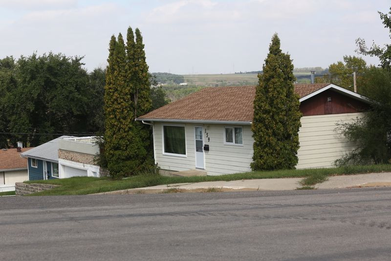
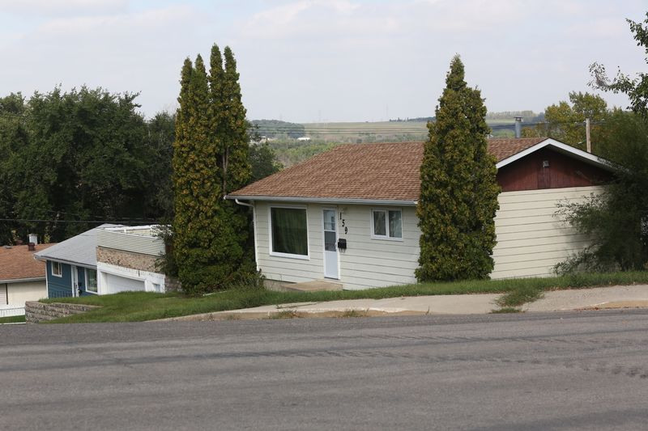

In a photo hanging on the wall of a pleasant west-end home, a pretty girl with a bright smile wears a sparkling tiara and a pink dress with butterfly wings. Her grandmother says her special girl used to love to dress up like a princess.
“She was a very sweet child, just absolutely sweet,” the grandmother says.
About 10 years after that photo was taken, “Emma”, now 14 years old, stands in the prisoner’s dock at the Brandon courthouse.
She just reaches the shoulders of the two sheriffs who stand next to her. Her jailhouse-grey sweatshirt droops over her slight frame.
As she’d entered the courtroom, she’d flashed a smile and waved to her grandparents seated in the gallery.
But in her mugshot, she’s crying. Her long dark hair is a bushy tangle. Tears have left two long, dark streaks of mascara down her cheeks.
As a repeat runaway, her life is a toxic blend of alcohol, drugs, sexual abuse and stints in jail for minor crimes.
“It’s really hard to wrap our minds around everything she has fallen into,” her grandmother says. Her granddaughter isn’t the only one.
This year alone, the Brandon Police Service has received 204 calls about runaway or missing youth. Of those, 151 involved children or youth in CFS care or a group home.
Some of them are teenage girls who either return home, eventually, themselves or get picked up by police only to run again and again.
Many of the girls know each other. A number of them would run from the same city group home — Patrick House, operated by Child and Family Services of Western Manitoba — and they ran into the hands of men who sexually exploited them.
One of those men, 30-year-old Joshua Allan Duff, has been convicted and sent to prison for giving underage girls drugs for sex. Two men accused of sexually assaulting another Patrick House runaway remain before the courts.
Yet girls continue to run, and one parent says that despite Duff’s recent conviction, it appears there are other men to take his place.
StreetReach manager and provincial exploitation specialist Jennifer Richardson says one statistic is consistent worldwide — 80 per cent of exploited children have been reported missing to police.
“It’s the highest indicator we have,” Richardson said.
There’s a tendency to blame the runaway and not the offender, Richardson says. People wonder, why can’t the kids just stay put?
“It’s so much more complex than that,” she responds.
StreetReach is part of the Manitoba government’s strategy to prevent sexual exploitation of youth.
In the last year, it has searched about 3,000 homes for missing kids, and 224 kids were safely returned 504 times. The vast majority of those cases are in Winnipeg, where StreetReach is based, but team members travel across the province to help agencies protect children from sexual exploitation.
“People think it only happens in Winnipeg — that’s incorrect,” Richardson says. “We see it happening in really small areas, too.”
It’s not just girls with a troubled home life who run, Richardson said. Runaways come from good homes too.
In Brandon, the guardians and parents of runaways say there aren’t enough supports. Police, tasked with finding the AWOL girls, say there’s not much else they can do.
Courts place girls on orders to protect them, but they continually breach and wind up in jail, and rehab doesn’t seem to help either.
To look at the problem, the Brandon Sun focused on the Patrick House cases.
It’s true that girls run from their family homes and from other group homes in the city run by other agencies. CFS of Western Manitoba reports that early in the Duff investigation, 10 possible victims were identified. Of those, two were from Patrick House and others were either in group homes run by another agency or living at their family home.
Yet, the cases against Duff — which CFS of Western Manitoba helped to build — provide insight into the runaways’ backgrounds.
The Sun interviewed three former Patrick House residents, including two habitual runaways, their parents and guardians and researched the history of two other exploited girls.
To protect their identity, the newspaper isn’t using the girls’ real names.
There seemed to be a pattern — troubled girls persistently run from their homes or group homes, they’re given (or steal) alcohol and supplied with drugs, addictions develop or worsen, and some are sexually exploited.
The girls commit petty crime and are placed on court orders intended to protect them, but they continue to run away, breach the orders, and as their records worsen, they’re “criminalized” and sent to jail.
Issue One
Exploited
Troubled teen girls with a history of abuse, addictions and mental health issues run away from their family home or group homes.
The reason why isn’t clear — perhaps it’s the need to feed addiction, or that their traumatic lives trap them in the fight and flight response. Broken relationships with parents or previous loss of loved ones make them distrust adults such as foster parents, caregivers and social workers.
Like other adolescents, they engage in risky behaviour. The girls stay at the homes of older friends and they steal alcohol, or booze and drugs are provided by friends and older men. Some of those men sexually exploit the girls whose addictions put them at risk of overdose.
Despite abuse, the girls continue to run, perhaps in part because some don’t see themselves as exploited.
The girls who were exploited by Duff were 13 to 15 years old.
One told police that it was friends who introduced her to him. They told her that if she needed to “hook up” with drugs, she just needed to call him.
The first time she had sex with Duff, she went to his home. He asked her age, told her she was cute and took her clothes off.
He told her to do a couple of lines of cocaine off the table and they had sex in his bedroom. After that, Duff handed her an “eight ball” of cocaine.
During another visit to his home, he made her perform oral sex on him and then gave her cocaine. Once outside, she threw up.
On Aug. 13, 2015, Duff was sentenced to nearly four years in prison for giving four girls cocaine and marijuana for sex.
One addicted girl had sex with him for cocaine 15 to 20 times. Another said he recruited girls from Patrick House to sell marijuana for him.
Yet another girl said he asked her if she wanted to make extra money by hanging out with his lonely guy friends.
One victim said Duff gave a girl cocaine for free at first — then told her she had to “work it off.”
The girls were exploited between February 2010 and October 2014.
At least three of the victims were living in CFS care in city group homes. One was from a specialized foster home licensed under Dakota Ojibway Child and Family Services. Two were from Patrick House, a co-ed home for troubled 13 to 17 year olds that’s licensed for up to six youth. Another had run from home.
Duff wasn’t the only one accused of sex offences against a runaway Patrick House girl. Two other men remain before the courts on allegations that they had sex with yet another 14-year-old Patrick House girl, “Mary,” who’d run away in late 2013.
Besides CFS involvement, the girls in the Duff case had another thing in common — they were repeat runaways, whether from their own homes or while placed at Patrick House.
Teens are sent to Patrick House for help, but girls who used to live there and their parents say it’s part of the problem.
They question whether it can handle the high-risk youth it receives, its supervision and the qualifications and interest of its staff.
CFS of Western Manitoba CEO Dave McGregor says staff do their best in a child welfare system under increasing strain from the growing number of kids in care.
Kids are placed in Patrick House because they have needs that are too much for their parents to handle.
They may have childhood trauma from abuse, addictions and mental health issues. They may be suicidal, for example, or struggle with conditions such as attention deficit hyperactivity disorder or post-traumatic stress disorder.
Girls who spoke to the Sun say their running began before they were placed at the home. In 2014-2015, 92 of the cases referred to CFS of Western Manitoba involved children who had issues with going “missing.”
McGregor said that provincially licensed Patrick House is supposed to be a stabilization and assessment unit — staff assess the needs of a child, who is then moved to a more suitable placement, ideally a foster home. It’s not a treatment home.
But a lack of suitable foster placements has caused a backup in the child welfare system, McGregor said, and children stay longer at Patrick House than they should.
Issue Two
Overlooked
A Children's Advocate report, "Safe for Today," describes how longtime foster parents are retiring and they’re hard to replace. Would be foster parents aren’t willing to take on struggling children, and it’s now more common for adults to be employed outside the home.
Children with complex needs — such as addictions, mental health issues and trauma — require caregivers who are available at any time.
Meanwhile, the number of specialized treatment beds hasn’t kept pace with the growing number of high-needs children in care, forcing youth into emergency or short term placements. Despite that, little has been done.
The needs of youth with complex problems aren’t being met, states the report. It’s especially difficult to obtain mental health services for kids in CFS care. Potential solutions are rejected due to costs.
The Children’s Advocate has called for a multi-sector, longterm strategy. Over the years such initiatives have been studied, but few begun.
The Office of the Children’s Advocate of Manitoba special report “Safe for Today,” released in July, describes a child welfare system stuck in crisis.
Across the province, the number of specialized treatment beds hasn’t kept up with the growing number of kids in care with high needs, and the shortage has worsened in the last 10 years.
The report estimates that in 2005-2006, there were 662 children in care who needed specialized help, and 652 residential beds. By March 2014, those figures were 1,029 children for 766 beds.
The issue has been the subject of four reports, and numerous recommendations to the Department of Family Services.
“Fifteen years after the first report… little has changed for children and youth with complex needs, who are often unable to secure the services and supports they need for long-term success,” states the report.
Children are forced into emergency and short-term placements, with a focus on short-term decisions aimed at keeping them safe, at least for now.
The report concludes that the system lacks a long-term strategy that unites staff across service sectors — such as health, and mental health — to help children with complex needs.
McGregor agrees that such a plan is needed. Child welfare, the legal community, police, school divisions and mental health staff need to work together.
“We need a multi-system approach to these kids,” he said.
One runaway’s mother agrees.
“There’s none of that when it comes to the court system, the police, CFS and group homes,” she says, adding that parents and child welfare officials also need to be more responsible for the kids.
Overall, 5,000 placements have been added to the child welfare system over the last eight years.
Irvin-Ross said 100 beds and 200 staff have been added to emergency services, and the department is working with other groups to create more spots for kids with disabilities and complex needs.
“We have created more resources,” Irvin-Ross said. “We have more work to do and we’re committed to doing that.”
This month, a six-bed, secured residential care unit for girls aged 12 to 17 will open in Winnipeg. The program, a partnership with Marymound, will include a wide range of treatment for girls who struggle with such issues as mental health and addiction.
The department also worked with Project Neecheewam to opened a crisis unit in Winnipeg for high-risk girls that are victims of sexual exploitation.
As for the Brandon area, Irvin-Ross said there are currently 12 specialized foster homes with 43 beds.
When asked if Brandon could get a shelter for troubled girls like the one in Winnipeg, the minister said the department will soon review resources to determine what more is needed to help kids and families in crisis. She’ll wait to see what that review suggests.
The mother of one local runaway, “Jane,” says a secure treatment facility like the one in Winnipeg is needed here.
 

Jane, who recently lived at Patrick House, knows the exact date she arrived there.
“That’s the date that I started ruining my life,” says the girl, who was 15 when she lived at the group home.
Her parents had split and, her father largely absent and living in another city, she lived with her mom and stepfather.
Jane has had behavioural problems since she was young, leading to stress with her family that, to her, may have seemed like a lack of affection.
Her mother believes it was the death of Jane’s beloved grandmother in a car accident — the one person who seemed to care for her — that pushed her to run for the streets and into the arms of people who weren’t good for her.
Jane started to run away from her family home a couple of nights at a time. She stole, she lied, she fought with her mom.
Her desperate mother turned to CFS and asked that her daughter be placed at Patrick House.
Jane said staff seemed uncaring and her mom says, with no emotional attachment to Patrick House, it was easy for her daughter to run. Both say Jane’s running away got worse, and Jane says she didn’t develop a drug and alcohol problem until she got to the group home.
With only one staff member on duty overnight, it was easy to run, Jane said. When a youth took off, the lone staffer had to stay to watch the other residents.
Getting drugs and booze was easy — one youth would get it from their friends one day, another youth would get it from theirs the next. Older guys, including Jane’s 18-year-old boyfriend would give her alcohol.
Jane said she began running away with other girls at Patrick House. Boredom led her to experiment with alcohol, marijuana and cocaine.
She’d drink and do drugs at the homes of friends. When she wasn’t at her boyfriend’s apartment, she was with “Lisa” and Duff.
Lisa was another 15-year-old Patrick House girl that CFS believed Duff was providing with cocaine and sexually exploiting. They later had a relationship, and Duff was never charged with abusing her.
Jane said Duff would provide her with shelter, food and drugs for sex.
Her mom says placing her daughter in Patrick House was bittersweet. It gave her a break to develop patience as a mother, but she wouldn’t place her daughter there again.
She says facilities need to focus more on rehabilitation and healing.
“We need to start changing our thinking that way because that’s the only way we’re going to save our kids.”
Another former resident, who asked not to be named due to her troubled past, said girls ran from Patrick House because it simply doesn’t feel like home.
“They don’t know how to tell people what’s happening and why they’re running away is because they just don’t feel safe,” she said. “They don’t feel comfortable. They don’t feel welcome.”
Staff would hide in the office and not engage with the youth, she said. With little money and nothing to do besides drink and get high, the girls ran into trouble with the law. They’d vandalize, or shoplift — once three girls from the home stole a car to go joyriding.
Issue Three
Criminalized
Boredom and substance abuse leads to trouble with the law. Girls are arrested for shoplifting, mischief, assault and other relatively minor crimes.
By law, keeping a youth in jail is a last resort. So the girls are released on bail orders or receive probation with conditions intended to keep them safe — curfews, orders to abstain from alcohol and drugs, directives to stay away from friends who are a bad influence.
But the girls repeatedly run and breach their orders.
Again and again they’re released on tighter and tighter conditions until jail remains the final option. Jails, in effect, become emergency shelters for chronic runaways.
Their crimes — typically petty on the criminal scale — are part of the trap.
Once charged, the courts try to protect the vulnerable girls by putting them on court orders — with such conditions as curfews, or directives to abstain from drugs and alcohol and stay away from each other and potential abusers.
Judges are reluctant to jail the girls, whose records consist of a couple of minor crimes and mainly breaches. And by law, jail is to be a last resort.
Under the Youth Criminal Justice Act, jail isn’t to be used as a substitute for child protection, mental health treatment or other social measures.
But the girls continually breach their bail or probation and, as their records worsen, jail is where they end up.
Parents and caregivers are so desperate to stop the running, in some cases they want girls to remain in jail to protect them from exploitation or overdose.
They’re at a loss to explain why the girls run. Jane says girls are addicted to the lifestyle — the drugs, the alcohol and the partying. But she said running away, breaching court orders and the realization there are people looking for you has its own buzz.
“You just get a rush and you feel like people actually care about you,” she says. “I felt very loved when I ran away, because everyone was trying to find me.”
Richardson, of StreetReach, also has a theory. It goes back to the fight, flight or freeze response. Runaways dealing with difficulties in their life choose flight.
“The offenders are waiting there to catch those kids,” she said.
Sex offenders are ready to exploit any hints of weakness, Richardson said. It can be as small as “had a crappy day” written by a youth in a Facebook status.
Teens typically seek to be independent from their parents and caregivers, Richardson said. McGregor adds that sexually and physically abused children may not trust adults who try to care for them.
Abusers are ready to fill the void, whether it’s with drugs or kind words.
McGregor says Patrick House staff do their best to keep kids safe, help them make better choices and connect them with services such as counselling.
“Our staff are making many, many, many efforts above and beyond to try and keep these kids safe,” McGregor said.
But that effort stops short of physically stopping them from running away. Patrick House isn’t a locked facility, and the agency’s policy is not to physically restrain its young residents unless they’re putting themselves or others in immediate danger.
Staff are required by the province to report missing children to police. McGregor said staff have also followed fleeing children at a safe distance, and even gone alone to homes suspected of harbouring children to drag them out.
The problem is, McGregor said, the girls don’t see themselves as exploited — and that presents a problem for police.
Brandon Police Service acting Staff Sgt. Kirby Sararas, one of the police officers who has searched for runaway girls, describes the challenge of trying to find those who don’t want to be found.
The girls stay with older friends or boyfriends. Sararas says there seems to be a group of “naive” 20-somethings who distrust CFS and don’t see anything wrong with letting youth spend a night or two at their home.
Duff himself had lived in the child welfare system and was physically and emotionally abused in foster homes.
Jane said she would stay at the homes of friends who had parents who didn’t ask questions: “Some parents are less uptight.”
Patrick House staff report runaways and provide police with addresses where they might be found. But when officers knock, the girls hide or sneak out — Duff was known to hide girls in his attic.
Runaways will also rotate through a variety of addresses, making them harder to find.
Police issue media bulletins with the photos and descriptions of girls involved in “high-risk” behaviour, asking for tips to their whereabouts. It’s also a strategy to flush the girls out of hiding.
Other than that, Sararas said, police options are limited.
“There’s not a whole lot we can do in this situation,” Sararas said.
Other sources have spoken of friction between CFS and police over runaways. CFS agencies have been accused of improperly staffing group homes to cut costs, thereby offloading the responsibility onto police who are left to spend their time and resources tracking kids down.
However, both agencies had been watching Duff for some time. CFS of Western Manitoba contacted StreetReach, which brought CFS and the BPS together to strategize.
In February 2014, one exploited girl, at the urging of her CFS worker, stepped forward to police with statements against Duff and then a second girl came forward.
In August 2014, CFS of Western Manitoba’s lawyer sent Duff a letter ordering him to cease and desist in supplying Lisa and Jane with cocaine and sexually exploiting them.
Otherwise, he could be charged with interfering with a Child in Care under the province’s CFS Act.
That is, in fact, one of the charges Duff was eventually convicted of. In January, Patrick House staff notified police that Jane was at Duff’s home and they were caught together.
As more girls came forward, StreetReach advised CFS of Western Manitoba to use a relatively new tactic. The agency obtained a protection order under the province’s Child Sexual Exploitation and Human Trafficking Act, which was introduced in 2012.
It allows parents, guardians or CFS to quickly apply for a protection order without notice to the abuser. It takes effect when the respondent is served with a copy.
Duff was arrested on Feb. 19 for breaching a house arrest sentence for a previous drug conviction, at which point he was arrested for the offences against the girls. While in jail, he broke the protection order by placing phone calls to Lisa through a third party.
Recently, he pleaded guilty to harbouring children in care, sexual interference and procuring sex. He received three years and 10 months in prison.
Richardson praised CFS of Western Manitoba and the BPS for laying the groundwork on the Duff case.
Yet, despite Duff being put behind bars, his victims didn’t stop running. That included Jane, who’s now 17 and has since left Patrick House to return to her family home following a stint in rehab.
Jane ran four more times after she left rehab in early June, including a run to a nearby First Nation with Emma.
Her mother adds that girls, including yet another Patrick House resident, have been going to the home of another Brandon man to get drugs such as ecstasy.
“For every Josh Duff that goes to jail, there’s another four waiting in line,” she says.
Emma — who only stayed in Patrick House briefly, and has also since returned home — has been running away to be with her boyfriend at a nearby First Nation.
Her grandmother describes the sleepless nights and tears shed by her family over the girl’s frequent running away.
Her mother was a drug addict. Her grandmother suspects Emma was sexually abused at her mother’s home by an unknown man before she was taken in by her grandparents at two years old.
Emma has Attention Deficit Hyperactivity Disorder but is bright, her grandmother says.
At 12 years old, she moved to a rural Westman town where she began smoking marijuana. When she moved back to Brandon, she immediately started to run away from home, a couple of days at a time, to be with older friends and drink.
At first, it was for the sense of freedom, but then she met Duff, got addicted to cocaine and began to run for a week at a time. She’d stay with other friends and drink liquor and marijuana provided by another man.
Once, she and Jane ran away from Patrick House for a couple of weeks. Police eventually found Emma at her boyfriend’s.
After each run, police would find Emma and return her home. She’d sit on the couch, cry and hug her grandmother. Then, in the middle of the night, she was gone again, leaving her grandma wondering where things went wrong.
Emma once said it was addiction that pulled her away, but the grandmother isn’t sure that even Emma knows why she runs.
Her grandmother says the family has tried everything — they sent her to a locked rehab facility near Winnipeg, but Emma ran. The family couldn’t afford to send her to a private school that would provide her with a one-on-one worker.
Her grandmother and father say police and probation told them they can’t physically restrain Emma and she knows that.
Sometimes, Emma, a bag slung over her shoulder, simply walks out the door.
She didn’t know it at the time, but even as the grandmother spoke those words in a recent interview, Emma had already run again.
For stealing liquor and breaching court orders, she’d received probation and was released from custody and supposed to live with her grandparents and father.
She ran, got caught, was released on bail — to the surprise and anger of her dad — and ran again.
Police issued a missing girl bulletin. She appeared in court in custody.
The cycle continued.
Three months after getting out of rehab, Jane sits on the couch, wraps her arms around her mom and puts her head on her shoulder.
She’s now returned home, and her mom says she’s doing better. Jane says she got scared when she ran to a nearby first nation and witnessed two youths being swarmed and beaten.
After running away at least 50 times in the past, she hasn’t taken off in three months. Her moms says she’s following probation and is helpful around the house.
“I’ve got my kid back again,” her mom says.
Jane now appreciates how her mom had fought for her — by picking up the phone and scouring Facebook for clues to her daughter’s whereabouts when she’d go missing, by standing up in court to warn her daughter she’d call police if she went AWOL and breached her court orders, by being wiling to argue with her daughter if it meant keeping her safe.
“I have a great mother who really cares about me,” Jane says.
But her mom says there are many kids on the streets that aren’t heard about. Their parents have their own problems — alcohol or poverty — they’re too beaten down to chase or challenge their kids.
Jane is in touch with a current Patrick House resident, and understands the home has increased staff at night and tightened up its procedures for tracking its residents.
Emma, who has lost count of the times she has run, was released this week after spending 21 days in jail. She says she’s at a crossroad — she faces a possible future as a drug addict, but wants to go to school to pursue her dream of being a veterinarian.
She hasn’t done cocaine since Christmas, she says, and doesn’t smoke marijuana any more, although she admits she’s been running lately because she likes to drink.
She said she hopes she doesn’t run again, but what will it take to stop?
“I don’t know,” Emma says.